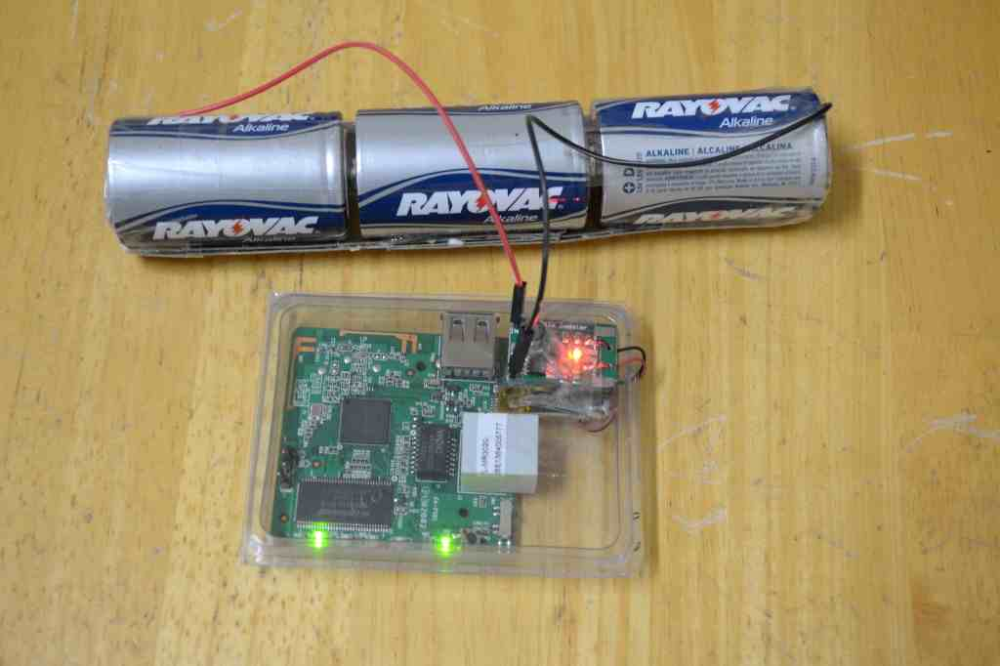

 The following is a collection of information that has been acquired from personal research or other efforts. I usually focus on technology topics that seem obvious, but for whatever reason the technical details on practical application are not covered. I'm not a consultant in the corporate sense just someone that feels this information should be common knowledge. There is no gain from ignorance. Hopefully this may be of help to you (researcher, enthusiast, student) or at least point you in the right direction, extrapolate where necessary. |
Avaliable Posts ================ [+] powershell script to batch file 10/07/2018 [+] gen-obfuscated powershell variant 11/25/2016 [+] porting gen-obfuscated to powershell 09/02/2016 [+] simple persistence with powershell 07/23/2016 [+] poisoning javascript CDNs 07/14/2016 [+] simple udp flooder via powershell 06/15/2016 [+] tcp shell traffic now encoded with base64 04/08/2016 [+] Compiling powershell scripts into executables 02/10/2016 [+] injecting code into shortcuts for persistence 02/07/2016 [+] asking for passwords with powershell 12/27/2015 [+] base64 string obfuscation 09/27/2015 [+] executing a ps1 script as an arbitrary file type 11/06/2015 [+] asynchronous shell handler 09/27/2015 [+] Using Self-Signed SSL Certificates with powershell 10/19/2015 [+] exploring string obfuscation techniques 09/27/2015 [+] the boot2own toolkit 10/20/2015 [+] uploading files with black-hole 01/25/2015 [+] using tor2web proxies with powershell iex 10/08/2015 [+] webcrawling with Mojolicious 06/26/2015 [+] download GHDB dorks with perl 05/10/2015 [+] getting the CH9200 USB/Ethernet adapter working 08/16/2015 [+] drive by Pi with HTML injection 10/08/2015 [+] asset tracking with TOR 10/08/2015 [+] using minimodem chat 09/17/2014 [+] Rtl-Sdr and wireless microphones 10/08/2015 [+] disposable WLANS with DropAP 09/15/2014 [+] pushing GPS logs to mobile hotspot 03/02/2015 [+] DIY remote GPS tracker 04/23/2014 [+] diskless boot with crunchbang 10/19/2015 [+] raspberry Pi PXE Server 07/29/2014 [+] geolocation Methods 10/08/2015